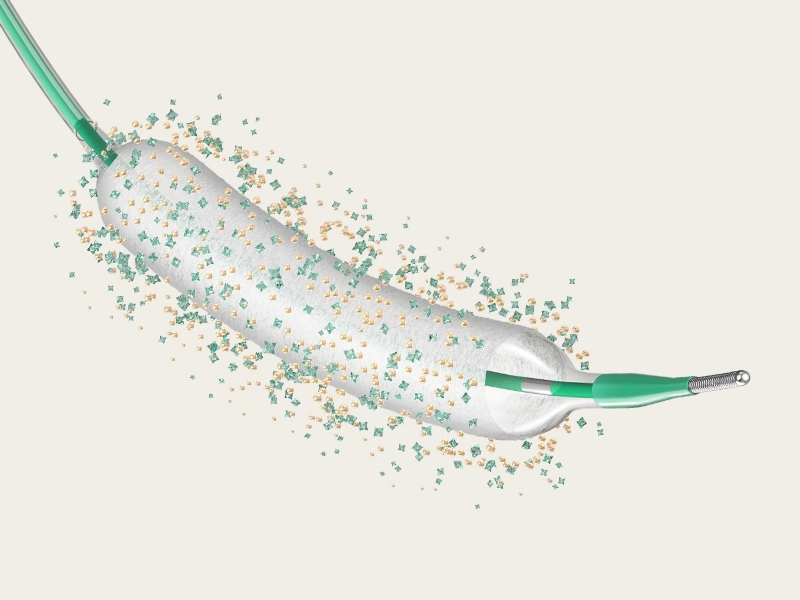

Paclitaxel
Fármaco utilizado no revestimento do balão farmacológico, conforme informações oficiais da B. Braun.
O SeQuent® Please NEO é um balão farmacológico da B. Braun voltado à terapia vascular intervencionista, combinando dilatação por balão com tecnologia de revestimento farmacológico.
Ver informações técnicas
O SeQuent® Please NEO é apresentado pela B. Braun como um balão farmacológico líder em evidências, desenvolvido para apoiar cardiologistas intervencionistas em procedimentos de terapia vascular.
Segundo a B. Braun, o produto utiliza fármaco Paclitaxel, excipiente Iopromida, tecnologia de revestimento PACCOCATH e é 100% livre de polímeros.
A tecnologia do SeQuent® Please NEO associa o fármaco Paclitaxel ao excipiente Iopromida, utilizando o revestimento PACCOCATH, descrito pela B. Braun como uma tecnologia exclusiva.
Fármaco utilizado no revestimento do balão farmacológico, conforme informações oficiais da B. Braun.
Excipiente associado ao Paclitaxel na tecnologia de revestimento do SeQuent® Please NEO.
Produto descrito pela B. Braun como 100% livre de polímeros.
| Característica | Informação |
|---|---|
| Produto | SeQuent® Please NEO |
| Fabricante | B. Braun |
| Categoria | Balão farmacológico / terapia vascular intervencionista |
| Fármaco | Paclitaxel |
| Excipiente | Iopromida |
| Tecnologia de revestimento | PACCOCATH |
| Polímeros | 100% livre de polímeros |
| Finalidade institucional | Apoiar cardiologistas intervencionistas por meio de desempenho comprovado e dados clínicos, conforme informações oficiais da B. Braun. |
O SeQuent® Please NEO está relacionado a procedimentos de terapia vascular intervencionista, conforme avaliação médica, indicação clínica e documentação oficial do fabricante.
Produto apresentado dentro do portfólio de terapia vascular intervencionista da B. Braun.
Tecnologia voltada ao suporte de cardiologistas intervencionistas em procedimentos especializados.
Combina o uso de balão com revestimento farmacológico, conforme documentação e indicação oficial do fabricante.
Entre em contato com a equipe LifeSolutions para conhecer detalhes técnicos, disponibilidade e formas de atendimento.